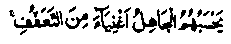
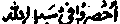

Chapter Five · Section (b): Ahadith threatening punishment for non-payment of Zakaat
10. Characteristics of those who deserve Zakaat
8. While paying Zakaat, a man should also take care to spend it on such occasions that can bring him increasing rewards. If Sadaqah is given to persons who possess one or more of the following six qualities, one can earn bountiful rewards; the more of these qualities are found in a person, the more deserving he will be for receiving Sadaqah and the greater will be the reward for spending on him:
(a) The man should be pious and righteous, least concerned about worldly interests and devoted to deeds that are beneficial for the Akhirah. Rasulullah Sallallaho alaihe wasallam said, "Let not anyone but the pious eat your food" (already quoted at serial No. 23 in chapter one). The reason . is that the pious man will gain strength from your food for his devotional prayers and for other acts of piety and, on account of your assistance, you will share the blessings and rewards of his deeds in obedience to Allah Ta'ala.
(b) The one receiving Sadaqah should be an ‘Alim or one devoted to religious studies. For, in this way, you will be helping him to acquire knowledge; and pursuit of knowledge is the best of all devotions, its excellence depending upon the intentions of the scholar.
Abdullah Ibne Mubarak Rahmatullah alaihe, the renowned Muhaddith and a great Divine, was very particular about giving his favours to the Ulama. When someone asked him, Would’nt it be better if you also granted favours to people other than the Ulama; he replied, "In my estimate, no other status except Nabuwwat is more exalted than that of the Ulama. When a seeker of knowledge turns his attention to something else, it distracts him from his pursuit of knowledge; it is, therefore, most desirable to help him to devote all his time to learning of knowledge."
(c) The man receiving Sadaqah should be a true "Muwahhid" in his piety. The sign of a true Muwahhid i.e. strict believer in monotheism or the oneness of Allah Ta'ala is that, on receiving a favour from someone, he bows in gratitude to Allah Ta'ala believing, from his heart, that the favour was really from Allah Ta'ala, Who alone (and none else) is the True Giver, while the man giving it to him is just an intermediary who has been assigned the duty to carry it out Luqman Alaihissalam advised his son, thus: ‘Let not anyone other than Allah Ta'ala be a Benefactor to you. Regard anyone else’s favour to you as a loan. He who feels obliged to the intervening agent does not know the True Benefactor, Allah Ta'ala. Such a one does not realize that the man giving a boon is just an intermediary: Allah Ta'ala put it in his heart to give a boon to so-and-so. He, therefore, could not help doing you a favour.
When this is firmly believed, then a person takes no notice of the causes or means of things but looks up to Allah Ta'ala, the Causer of all Causes (Musabbib-ul-Asbaab). Doing a favour to such a one is more beneficial than granting favours to a person who shows gratitude to you extravagantly. For, the one who is flattering you today may speak ill of you next time when you do not oblige him. On the contrary, a true Muwahhid will never speak ill of you, as he regards you as an intermediary.
(d) The one receiving your Sadaqah should be a person who never lets others know about his neediness, nor complains to others of his straitened circumstances. Especially deserving of your help is the man who, when in affluence used to behave generously towards people but who, because of hard times, finds. it difficult to keep up appearances. Such a needy person wears only an appearance of affluence and Allah Ta'ala says in the. Holy Qur’an, in praise of such persons:

"The unthinking man accounts them wealthy".
This Ayat occurs in section (Ruku) 37 of Surah al-Baqarah and is given below, in full:
"(Sadaqah is) actually for the needy who are straitened for the cause of Allah (for the cause of Deen) and they cannot go about the .country (in search of livelihood). The unthinking man ' regards them to be wealthy because of their restraint (refraining from asking favours). Yet you can recognize them by their signs. They do not beg men with importunity. And whatever good thing you spend (on the needs of such people ), Allah knows it. (al-Baqarah:273)
NOTE: That is to say, in normal conditions, the reward for spending on such people is greater than that of giving Sadaqah to common people. However, in certain circumstances, one may earn even greater reward for spending on other people. For example, the reward for spending on common people increases when they are in great need of help, while these seemingly rich persons are expected to get help from other sources. In normal circumstances, it is more rewarding to help such people (as have been described in the Ayat). Sometimes, it becomes more urgent and more rewarding to help the less pious and even the non-believing person.
It is noteworthy that this Ayat applies most suitably to the Ulama of India and Pakistan who have devoted their lives to the propagation of knowledge. So, the most deserving persons for Sadaqah are those who have devoted their lives to the cause of religious knowledge. Some unthinking people object to the giving of Sadaqah to those engaged in religious studies saying, ‘Can’t these people earn their living? The answer to this objection is contained in the above Ayat of the Holy Qur’an which says:
‘They cannot go about the country’
i.e. a man cannot busy himself with two pursuits at a time, one of which demands whole-hearted concentration. And he who has a little taste for knowledge must have learnt by experience that the acquisition of knowledge demands a single-minded concentration and whole-time devotion. And, while doing business, one cannot serve the cause of knowledge perfectly well. Thousands of instances can be quoted to illustrate this point. (Bayan-ul-Qur’an)
Ibne Abbas Radhiallaho anho says, "The poor ones mentioned in this Ayat are the Fraternity who lived in the Suffah (veranda) in the Holy Masjid at Madinah Munawwarah (called Ashaabus-Suffah)." They were also a fraternity of the seekers of knowledge who remained in blessed companionship with Rasulullah Sallallaho alaihe wasallam, in order to acquire the knowledge of the formal regulations of Islam as well as the spiritual concepts. Muhammad Ibne Ka‘b Qurazi Rahmatullah alaihe says that the Ayat refers to the fraternity of the Suffah who had no houses for shelter, nor any wives or children to live with. In this Ayat, Allah Ta'ala has exhorted the Mo’mineen (Believers) to give Sadaqah to those people. Qatadah Rahmatullah alaihe says that, in this Ayat, the reference is to those who had devoted their lives for Jehaad in the path of Allah and could not engage in business to earn their living. (Durre Manthur).
Imaam Ghazali Rahmatullah alaihe says, They are those who do not beg for help, for they are rich with the wealth of faith (Imaan), because of self-control over their desires. One should look for such people and give them Sadaqah. Especially, one should try to find out the private difficulties of such religious people and spend money on the deserving." It is far more rewarding to help such people than to spend money on common beggars. It is however difficult to find them, because they do not let others know of their conditions and, therefore, people regard them as well-to-do.
(e) The person receiving your Sadaqah should be a man who has to support a large family, or is suffering from a disease or any other infirmity which prevents him from earning his livelihood. Such people also fall into the category of those mentioned in the Ayat

Such people are in straitened circumstances owing to their poverty or scanty provisions or because of their absorption in devotions or due to some other unavoidable circumstances that have made them incapable of finding self-sufficient means.It was in view of such considerations that Umar Radhiallaho anho used to give ten goats or even more to some families and, when Rasulullah Sallallaho alaihe wasallam acquired some property, which he had got as booty without fighting the enemy (called the ‘Faiy’), he gave two portions to a married man and one to the unmarried.
(f) A single man also earns increasing reward for giving Sadaqah to one of his relatives, getting thereby the blessings of Sadaqah as well as the reward for showing kindness to his relatives as a means of showing strong ties of kinships. We have already discussed this point under the Hadith given at serial No. 6 in Chapter three.
After recounting six qualities of the persons who are more deserving for receiving Sadaqah, Imaam Ghazali Rahmatullah alaihe writes: These are the qualities which should preferably be found in a person receiving Sadaqah, What is more, the qualities may vary in degree and, thus, the Sadaqah will earn different graduations according to the high or low degree of the quality possessed by the beneficiary. For example, a high degree of piety may earn higher reward than a low degree of that quality; a number of distinctions exist between the close relatives and the distant relations, and in other virtues also. Therefore, one should look for a person who possesses a quality in a high degree. And if someone were to combine all these qualities in his person, he would be highly valued and an asset for the giver, by spending on whom he can earn maximum blessings and rewards from Allah Ta'ala.
"Indeed, if a man knows such a person, he should try to spend as much on him as he can. If not, he should search for one possessing all these qualities. If, after making efforts, a man can find such a one, he will earn double blessings: one for searching for such a pious being and the second for well-deserved spending. It is also possible that, after giving Sadaqah to a person who, in your estimation, seems to possess some or all of these qualities, you come to know that he does not really possess these qualities. Even then, you will earn the blessings of making an effort to search for such a person and, in addition, your heart will be cured of the evil of miserliness; love for Allah will be firmly rooted in your heart and you will be granted the power to exert yourself in acts of obedience to Him.
"These three benefits of Sadaqah are highly valuable in themselves as they strengthen the heart of man, inspiring it with the longing to meet Allah Ta'ala. These advantages will accrue in any case, and one can gain additional rewards for spending it in desirable places. There are yet more advantages of giving Sadaqah to the pious. When such beings receive a favour from someone, they invoke Allah’s blessings for him, and remain ever concerned for his well being. Indeed, the good wishes coming from the hearts of the pious can exert great influence and their benedictions improve his worldly life with a bright future in the Akhirah. Allah Ta'ala has invested the supplications of the pious with effective fulfilment" (Condensed and adapted from Ihyaa-ul-Uloom).
Muhammad Zakriyya Kandhalwi Mazahir-ul-Uloom, SAHARANPUR
KUTUB KHANA FAIZI LAHORE (Pakistan)